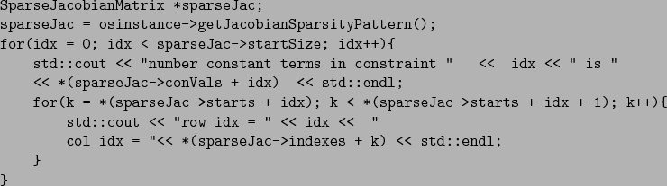

Many solvers such as Ipopt (projects.coin-or.org/Ipopt) or Knitro (www.ziena.com) require the sparsity pattern of the Jacobian of the constraint matrix and the Hessian of the Lagrangian function. Note well that the constraint matrix of the example in Section 9.2
constitutes only the last two rows of (24) but does include the linear terms. The following code illustrates how to get the sparsity pattern of the constraint Jacobian matrix

For the example problem this will produce
JACOBIAN SPARSITY PATTERN number constant terms in constraint 0 is 0 row idx = 0 col idx = 1 row idx = 0 col idx = 3 number constant terms in constraint 1 is 1 row idx = 1 col idx = 2 row idx = 1 col idx = 0 row idx = 1 col idx = 3The constant term in constraint 1 corresponds to the linear term
f variables with constant derivatives. In this example, when idx is 1, there is one variable with a constant derivative and it is variable (Actually variable  has a constant derivative but the code does not check to see if variables that appear in the <nonlinearExpressions> section have constant derivative.) The variables with constant derivatives never appear in the AD evaluation.
has a constant derivative but the code does not check to see if variables that appear in the <nonlinearExpressions> section have constant derivative.) The variables with constant derivatives never appear in the AD evaluation.
The following code illustrates how to get the sparsity pattern of the Hessian of the Lagrangian.
SparseHessianMatrix *sparseHessian;
sparseHessian = osinstance->getLagrangianHessianSparsityPattern( );
for(idx = 0; idx < sparseHessian->hessDimension; idx++){
std::cout << "Row Index = " << *(sparseHessian->hessRowIdx + idx) ;
std::cout << " Column Index = " << *(sparseHessian->hessColIdx + idx);
}
The SparseHessianMatrix class has the int data members hessRowIdx and hessColIdx for indexing potential nonzero elements in the Hessian matrix. The double data member hessValues holds the value of the respective second derivative at each iteration. The data member hessDimension is the number of nonzero elements in the Hessian.